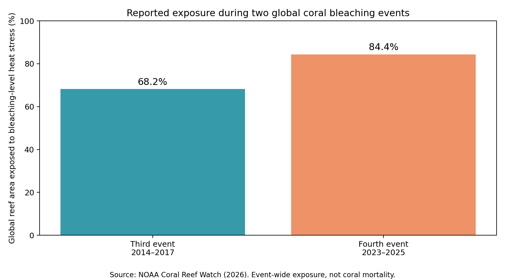

Research question
What can wildlife, prehistoric life, and coral reefs reveal about environmental change?
Completed · Literature review and reproducible secondary analysis
Wildlife, dinosaurs, and ocean life · Tanisha Javeri · BA in Environmental Studies
This research examines how environmental change influences living organisms across different timescales. It brings together current marine observations, established findings on wildlife and habitat pressures, and evidence from the fossil record. The numerical analysis focuses on published coral-reef heat-stress exposure. The wildlife and dinosaur sections are evidence-based literature reviews, not new field studies.
Wildlife depends on access to suitable habitat, food, water, and opportunities to reproduce. When temperature patterns, precipitation, or land cover change, species may move to new areas, experience mismatches in seasonal timing, or lose suitable habitat. These effects vary greatly by species and region. Land use, habitat fragmentation, invasive species, and pollution can interact with climate pressures, so it would be misleading to attribute every wildlife decline to temperature alone.
Finding from the literature: Environmental change can alter habitat suitability and ecosystem relationships, but assessing a specific population requires local monitoring data. This project does not estimate population loss for any particular species.
Dinosaurs occupied changing environments over millions of years. The end-Cretaceous mass extinction about 66 million years ago eliminated non-avian dinosaurs and many other organisms. Fossil and geological evidence strongly supports a major asteroid impact near present-day Mexico as the principal cause. Dust and other atmospheric effects disrupted climate and food webs. Birds are surviving avian dinosaurs, so it is not correct to say every dinosaur went extinct.
Finding from the literature: The fossil record shows that rapid environmental disturbances can have major consequences for ecosystems. This event is not a direct prediction of modern climate change: the causes, speed, and environmental context differ.
Oceans absorb most of the excess heat accumulating in Earth's climate system. Marine heatwaves can stress corals, which may expel their symbiotic algae and become bleached. Bleaching indicates stress, not automatic death; recovery is possible if conditions improve. Reef ecosystems provide habitat for many marine species, so widespread bleaching is an important ecological concern.
NOAA Coral Reef Watch reported that bleaching-level heat stress affected 68.2% of global reef area during the third global bleaching event (2014–2017) and 84.4% during the fourth event (2023–2025). The difference is 16.2 percentage points, or about 23.8% higher relative exposure than the third event's reported share. These percentages describe the area exposed at least once during each event, not the fraction of corals that died or the intensity of heat at each reef.

Download cited summary data (CSV) · Download reproducible Python analysis
Select an organism to explore the environmental evidence, the main threat, and a research question worth investigating. These are evidence-based summaries, not measurements collected by this project.
Corals are animals that form reef habitats supporting diverse marine communities.
Environmental pressure: Marine heatwaves can trigger coral bleaching.
Research question: How do the frequency and duration of marine heatwaves relate to reef recovery?
Source context: NOAA Coral Reef Watch, NOAA Fisheries, U.S. Fish & Wildlife Service, and the Smithsonian. Species-specific responses vary by location and population.
Toggle the reported global reef-area exposure shares. The bars compare the fraction of global reef area exposed to bleaching-level heat stress at least once during each event—not coral mortality.
The reported fourth-event share exceeds the third-event share by 16.2 percentage points. Because the event periods differ in duration, this two-point comparison cannot establish an annual trend, or tell us how many corals survived.
This is a secondary-source research synthesis with a small, transparent calculation based on two event-wide NOAA summary values. The Python script reads those published percentages, computes their difference and relative change, and generates the chart. No original wildlife surveys, fossil measurements, or satellite imagery were collected or processed. Different event lengths and observation coverage limit what can be inferred from the two summary percentages; the comparison does not prove a linear trend or quantify biological mortality.
Life on Earth has always responded to environmental change, but the consequences depend on the organism, ecosystem, and type of disturbance. The dinosaur fossil record demonstrates the potential effects of catastrophic disruption; modern wildlife research highlights the importance of habitat conditions; and NOAA's coral-reef observations document extensive recent marine heat stress. Together, these findings show why environmental monitoring and careful interpretation of evidence matter.
What can wildlife, prehistoric life, and coral reefs reveal about environmental change?
Animals depend on stable habitats. Fossils reveal major changes in past ecosystems. Coral reefs respond to marine heat stress.
I compared NOAA reported coral reef heat stress exposure during two global bleaching events and reviewed broader ecological questions.
The exposed reef area increased from 68.2 percent in the third event to 84.4 percent in the fourth event, a difference of 16.2 percentage points.
Heat stress exposure does not mean all corals died. The forest and dinosaur scenes are educational animations.
Open the editable research workbook in Google Sheets and the presentation in Google Slides by uploading the downloaded files to Google Drive.
Forest animals and dinosaurs on the website are animations; the numerical comparison concerns coral heat exposure only.
Download the published values used in this project and my presentation of the findings.
Limitations: Heat stress exposure does not mean the same percentage of coral died.